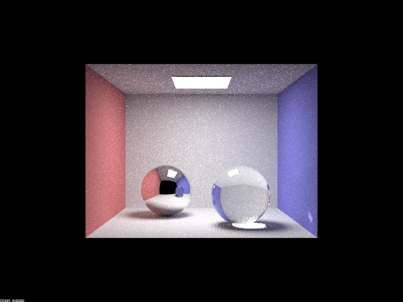

Project 3-2: PathTracer
CS 184: Computer Graphics and Imaging, Spring 2023
Shannon Bonet & Ace Chen
Overview
In 3-2, we added support for rendering glass and mirrors & microfacet material. We didn’t encounter too many problems in this project. Though the spec was really detailed, most bugs were mistakes in formula expression, particularly when dealing with null and zero values.
Part 1: Mirror and Glass

|

|

|
|

|

|

Point out the new multibounce effects that appear in each image.
- Ray depth 0: Fully dark except for area light
- Ray depth 1: Walls and floor visible, spheres black with patches of area light
- Ray depth 2: Ceiling visible, walls and floor reflected on left sphere, walls and floor dimly visible on right sphere
- Ray depth 3: Box brighter, ceiling reflected on left sphere, right sphere refracting light and showing highlight underneath
- Ray depth 4: Box brighter, right sphere reflection is visible in left sphere, highlight under right sphere also lights the bottom of the sphere, patch of light on the right wall
- Ray depth 5: Scene and spheres are brighter overall
- Ray depth 100: Scene and spheres are brighter overall
Explain how these bounce numbers relate to the particular effects that appear. Make sure to include all screenshots.
- Ray depth 0: There are no light bounces, so the only light we see is the area light rays going straight to the camera.
- Ray depth 1: We see the spheres as black with shadows because they prevent rays from passing through them, and we see the area light patch on the sphere as it bounces off the surface into the camera. The left sphere reflects all the light while the right sphere only partially reflects, which is why the right patch appears spottier.
- Ray depth 2: On the left reflective sphere, we are able to see the colors of the Cornell box as rays can bounce from the area light into the sphere and then into the camera. We are not able to see the ceiling of the box in the sphere as the area light does not illuminate the ceiling, but the ceiling of the box itself is dimly lit because light can bounce off surfaces into the ceiling. The right sphere similarly starts to reflect some light as rays bounce from the light to the walls to the sphere, but it’s still very dark as most of the light is entering the sphere for refraction.
- Ray depth 3: The ceiling is visible in the left sphere because light can reflect from the area light to a surface to the ceiling and then to the left sphere. The right sphere is now properly refracting light because light can bounce from a surface into the sphere, then out of the sphere, then into the camera. The highlight under the sphere shows up as a result of light entering the sphere, exiting the sphere, and bouncing off the floor into the camera. The box is also brighter as more light is reflected onto it.
- Ray depth 4: The right sphere can be seen in the left one because light bounces on the blue wall, into the right sphere, out of the right sphere, then onto the left sphere and into the camera. The bottom of the right sphere is also lit as light from the highlight spot bounces back on the sphere and into the camera. Similarly, this causes a patch of light on the right wall as light from the highlight reflects onto the wall and into the camera.
- Ray depth 5: At this point, most notable bounce effects are in place. The main difference is that the right ball continues to get brighter as light bounces through the ball more.
- Ray depth 100: Again larger the same, but with a brighter scene as light bounces more frequently.
Part 2: Microfacet Material
We observed that higher α values produce a rougher appearance, and smaller α values produce smoother results.
The following CBdragon_microfacet_au.dae images were made with 256 samples, 4 samples per light,
and 5 bounces. For 0.005 and 0.05 values, there’s a noticable smoothness
that that 0.25 and 0.5 lack.
0.005 α |
0.05 α |
0.25 α |
0.5 α |
Using cosine hemisphere sampling, we observe a noisier image in comparison to importance sampling. This is expected, as importance sampling better distributes the light in areas where expected.
We can also change η and k to create different conductor materials beyond the provided silver and gold. For instance, we can create a nickle
bunny as shown below where η = 1.9874 (r) 1.9200 (g) 1.7675 (b) and k = 4.0011 (r) 3.6100 (g) 3.0550 (b).